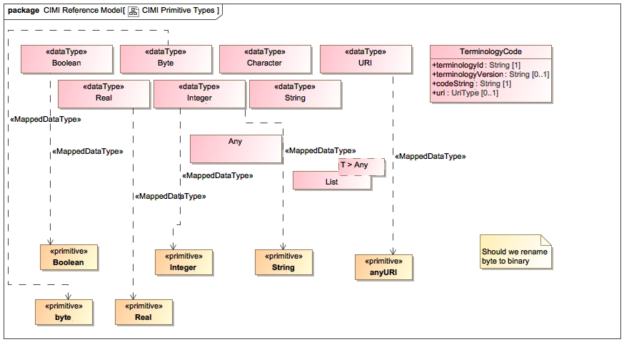

The PrimitiveTypes package contains the primivite types used by the CIMI model - defined as the most basic data types in the model. In CIMI, these include Boolean, Integer, String, Byte, Character, and URI, Real.. It also contains the List and Array types used to represent multi-cardinality attributes (collections). (Note that the CIMI Array type will most likely be deprecated in future iterations of the model.)
A note about multi-cardinality attributes: the OpenEHR specification distinguishes between the notion of existence and cardinality. Consider a multi-cardinality address attribute in a Person class. Existence refers to the specification of whether the address attribute is optional or required. If required, existence is 1..1, otherwise it is 0..1. This applies to the entire collection. Existence can also be constrained out in archetypes (i.e., 0..0) meaning that address is not allowed in the class. Cardinality refers the number of elements allowed in the list. Very rarely is the cardinality constrained in CIMI and is often simply 0..*. CIMI primitive types map to the UML2 Metamodel primitive types.
